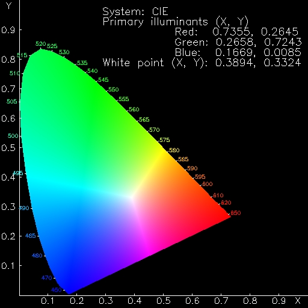
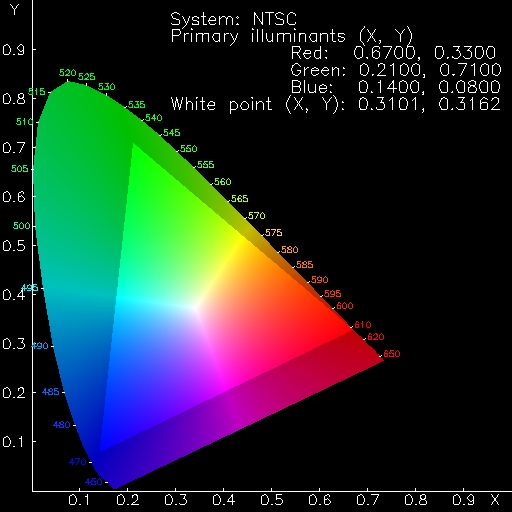

En aquest apartat introduirem el model CIE. Tots els models descrits en els apartats anteriors són relativament artificials, però estan disenyats per ser relativament fàcils de manipular. Aquest darrer model que volem presentar-vos no és tan senzill de fer servir, però té avantatges importants:
El model HSB ja l'hem introduït com un de més proper a la nostra percepció del color, pero és lluny de la perfecció. Si mireu tots els colors de la base del con de color HSB (que es correspon a B=1) veureu que la intensitat percebuda no és igual per tots. Així mateix, en el model CIE les distàncies entre colors s'acosten més a la nostra percepció de quan diferents són. És a dir que colors propers en el model es perceben com semblants, independentement de la regió del model en que estiguem.
El model CIE deu el seu nom a la "Comission Internationale de l'Eclaraige", que el va definir l'any 1931 (existeix una definició revisada de l'any 1964, que per raons tècniques resulta menys apropiada en els gràfics per computador, pel que en general quan hom parla del model CIE es refereix a la definició de 1931 (veure [Foley, vanDamm, et al.] a la bibliografia). El van definir fixant tres funcions de sensibilitat espectral basades en la visió humana, més una distribució espectral (Font estàndard de llum CIE) amb la que s'il·lumina l'objecte. Així, per cada objecte resulten tres quantitats mesurables X, Y, i Z que són les coordenades tri-estímul CIE. A partir d'elles es calculen les coordenades del color al model CIE separant una component de luminància (intensitat) i dos de color amb els canvis
x := X / (X+Y+Z)
y := Y / (X+Y+Z)
l := Y
(recíprocament hom pot calcular (X,Y,Z) a partir de (x,y,l) fent
X := (x / y) l
Y := l
Z := ((1-x-y) / y) l
És habitual presentar la projecció sobre el pla (x,y) dels colors
que tenen luminància màxima (l=1) per a mostrar aquest model,
com a la figura
|  |
Encara que no es faci servir directament per a codificar els colors dels diferents píxels d'una imatge, el model CIE de color té diverses aplicacions. A la figura, tots els colors espectralment purs (aquells formats per ones d'una sola freqüència) apareixen a la frontera de la regió colorejada, al llarg de la seva part curvada. Prop del punt de coordenades x=0.3, y=0.3 es troba un punt blanc, que representa aproximadament la llum del sol. Observeu que no tots els colors apareixen al diagrama. Per exemple no trobareu el marró, que en realitat és taronja amb una luminància més petita (i el diagrama sols té els colors de màxima luminància).
El diagrama té moltes més propietats. La suma de dos colors qualsevols sobre el diagrama es troba al llarg del segment que els uneix (depenent de les proporcions en que es barregin els colors). Els colors que contenen el punt blanc al segment que els uneix (o sigui que poden barrejar-se per a obtenir blanc) es diuen complementaris.
Si per un terminal determinat de computador disposem de les
coordenades (x,y) de color CIE pels tres fòsfors usats pels
punts vermells, verds i blaus, els colors representables en aquell
dispositiu seran els compresos dins del triangle que té aquells tres
punts per vèrtexs (llevat dels efectes de discretització, que causaran
que no tots els punts ni totes les luminàncies siguin
abastables). Aquesta figura mostra els colors que poden veure's en un
monitor estàndard NTSC:
|  |
Veieu doncs perquè és raonable triar el vermell, verd i blau pels fòsfors de les pantalles: proporcionen triangles que cobreixen el màxim possible del diagrama NOTA.
Veieu també que no es poden generar tots els colors amb cap sistema basat en tres fòsfors, i només pot aspirar-se a cobrir una porció important dels colors possibles. Al conjut de colors que un dispositiu pot presentar se l'anomena el gamut del dispositiu.
En el cas d'impressores, resulta més complicat caracteritzar el seu
gamut perquè les tintes interaccionen entre sí produint severes
no-linealitats. Tanmateix sí és cert que el seu gamut es pot
representar com una àrea del diagrama CIE. Observeu però que en
aquest cas el gamut depèn en realitat del substrat sobre el que
s'imprimeix, que és el que aporta el color blanc. Podeu entreveure el
complicat que resulta adaptar el gamut d'una impressora al d'una
pantalla (per a que els colors de la impressió siguin el màxim de
semblants als que veiem en pantalla). Aquest és un problema difícil
que té rellevància en la indústria gràfica.